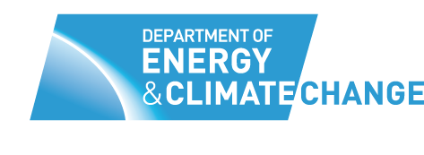

How to save energy and carbon in workplaces through behavioural change?

Introduction and engagement
Gathering employee's ideas, concerns and good practices

Highlighting local opportunities
Arrows created discussions in kitchen and common spaces

Co-design workshops across the organisation
A total of 6 ideas were developed

Co-design workshops across the organisation
A total of 6 ideas were developed

Prototyping and testing
Ideas were broken down into testable aspects

Co-development
Sharing findings and testing ideas with early adopters

Wireframes
2 ideas were developed to app stage

Implementation Strategy
Detailing and rolling out the services

Iterations
Implementing casial feedback

Iterations
Implementing casial feedback

Iterations
Implementing casial feedback
CarbonCulture
The CarbonCulture platform with carbon reducing games was developed in 6 months and ran as a closed research pilot in the Department of Enegry and Climate Change (DECC) from July 2011 to January 2012 achieving 32% uptake across the department.
CarbonCulture is a project by More Associates, a startup which saves energy in workplaces through visualising energy patterns and creating interventions of behavioural change. CarbonCulture's basic product are energy graphs and widgets to display the organisation's energy consumption. The engagement package combines a research phase and the development of web applications, targeting specific actions to reduce energy experimenting with gamification and behavioural change theories.
In 2011 such an engagement package was developed and piloted with DECC, the department of Energy and Climate change, during which 4 web applications were tested - Scrunch - saving energy when working late by encouraging employees to move to one part of the building, Foodprints - helping people to eat more healthily whilst eating food with less carbon, OK commuter - a game allowing people to record and tag their journeys to work and lastly Go2 - a business travel app showing the carbon intensity of business travel. All of these interventions are part of the CarbonCulture Platform, combining savings and an incentive mechanism - points mean prizes!

My Role
Process & Project Management
When I joined the team made up of 3 developers and one other designer, the design research phase at the Department of Energy and Climate change was about to start. This allowed me to see the entire process through: from designing materials for co-design workshops, conducting interviews, paper prototyping ideas, creating wireframes and user flows, doing usability testing, refining the branding of individual apps and detailing the service experience on- and offline. As part of this entire process I worked closely together with developers to build, test and iterate the apps including the detailing of roll out and execution of the pilot.
Design
I was responsible for the Scrunch app from ideas to wireframing, user flows, paper prototyping, testing and working with in-house visual designers, python and front end developers to build and iterate versions in an agile design manner.
Scrunch detailed description and process insights
Beyond this, I also designed the information architecture of displays communicating what's happening online, Posters communicating the research findings and infographics, prototypes of leaflets and all assets for the community blog, for which I often worked together with a copy editor for consistency.
Scrunch
Scrunch is an idea that arose from the co-design workshops as 'evening work club'. From about 6 o'clock the number of employees working late dropped to less than 5%. Everyone raised their concerns needing to wave at light sensors and high awareness of working late unproductively.
As a solution Scrunch was developed - a quiet, bright cafe like area for employees to move to after hours, providing tea, coffee and cold fresh lemonade on hot days. The app would record who's there and giving the option of 'going home on time' to collect their reward for not working late. Scrunch integrates elements of social proof, records actions and subtle elements of gamification.

Community Blog
I'm fascinated by how processes go and capturing learning. For CarbonCulture I ran the community blog, publishing findings and progress on the game ideas. I also did quite a bit of community management, conducted interviews and selling the game ideas to people through roll out.
Official Report
For the official report I prepared and coordinated the visual designer for the teaser PDF. For the web version, I research and picked the worpress theme, coordinating changes, structure and visuals.
View summary PDF
Browse the whole web report


Synthesis and Workshop materials
I assimilated all the findings from postcards, arrows and conversations into four categories of opportunities: Attitudes/Behaviour, Well-being/Comfort, Social Structures/Pressures, Building/ Technology opportunities from which I drafted 9 Brainstorm prompts for the workshops. I also prepared all materials single handedly, created the agenda and co-facilitated one of the tables, helping to visualise storyboards of ideas.
More impressions from the workshops
Achievements
Working on many different aspects of the projects under a tight time schedule on unfamiliar topics - Interdisciplinary team working - working with game and visual designers, front and backend developers and PHD research student Dan Lockton on behavioural change elements and other research - Coordinating an R&D project branch of Empower, a TSB (Design and Strategy Board) funded project - Planning, implementing and tweaking the pilot roll out and that of individual interventions and services - Communicating purpose and conducting interviews interhierachial. - Designing Carbonculture’s landing page (on the left)
The Team
UX designers: Alice Tyler, Fee Schmidt-Soltau | Visual Designers: Adam Dudd, Trixy Sommer | Developers: Andy Kilner, Alecs Geuder, Jon Smith, Alex Kelly | Researcher: Dan Lockton, Alice Tyler, Fee Schmidt-Soltau | Project Management: Tim Barrow Williams, Alice Tyler | Copy Mistress: Sonya Devine | Director: Luke Nicolson

